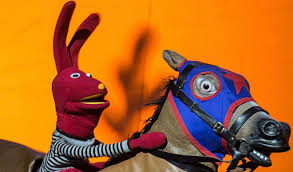
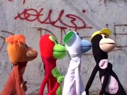

Nota Verde: El equilibrio ecológico
Juan Carlos Bodoque nos trae una exclusiva sobre la importancia de cuidar nuestro entorno.
Hoy en el Ranking Top
¡Baila sin César!
Si ver el video solo den clic aqui
Este es el video más pedido de la semana en el Ranking Top de Policarpo Avendaño.
Titulares de hoy
- Tulio Triviño olvida sus líneas otra vez.
- Juanín Juan Harry organiza el festival.
- Patana demuestra ser la mejor periodista.